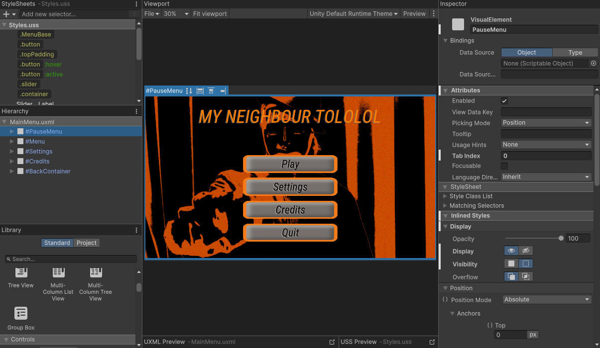
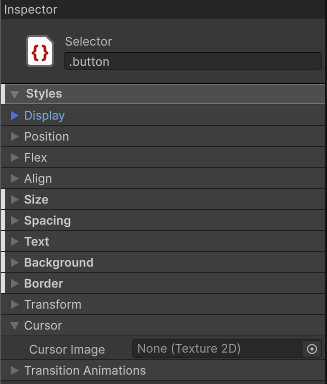

My neighbour Tololol
--- FGJ 2026 ---- Aleksi Ahonen: Programmer
- Roope Astrén: Actor, UI/UX work
- Kaspian Nyman: Programmer, Modeler, Level/UI Designer
- Markus Torkkell: Modeler, Texture Artist
- Niclas Valpola: Audio Designer, Composer, Cinematographer
- Meeri Koskenkangas: 2D art and UI
Theme: Mask
What is Tololol
This is one of the games for the Pelihillollis connected universe in collaboration with the above mentioned people.
What I worked on
I created the UI for the game using unity's own UI builder toolkit. The team wanted a way to make a uniform UI that could be used for every game going forward. It did not go as well as we'd hoped. I was also the actor in the game. Most of the time i was just trying to learn the new tool that I would be using going forward. I also created the opening cutscene script for the game.


The Problems
The UI Toolkit was not as easy to learn as one might think. The use of XML was most definitely a good choice and allowed for the rapid learning of the tool. However, majority of the time was spent on finding ways to quickly make easily replicable UI that can be used for the entirety of the game.
Conclusion
The project turned out fine and I will be able to work with the UI Toolkit going forwards. In the end, we took a little bit too much time on the project but we were able to make it in time for the return of the Game Jam.